Data cleaning in Pandas
Data cleaning in Pandas, also known as data cleansing or scrubbing, identifies and fixes errors, and removes duplicates, and irrelevant data from a raw dataset. Data cleaning is a part of data preparation that helps to have clean data to generate reliable visualizations, models, and business decisions.
In this article, we will learn how we can use Pandas to remove null values, and duplicates, and delete rows and columns. Moreover, we will discuss how we can standardize and normalize the dataset using the Pandas module.
The Pandas Python module has very useful methods for data cleaning, as well as methods for general data selection and manipulation that can be used for data cleaning.
Getting Started with Data cleaning in Pandas
For demonstration purposes, we will use a dataset about the price of houses in Dushanbe city. The dataset contains the location of houses, with some other details which include the number of rooms, number of floors, and price. You can download the dataset from this link.
Let us load the dataset using the Pandas module.
# importing pandas module
import pandas as pd
# loading dataset
data = pd.read_csv('Dushanbe_house.csv')
# heading of dataset
data.head()
Output:
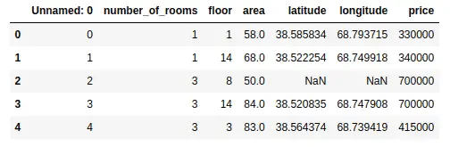
As you can see that the data is not cleaned. There is one unnecessary column and some null values as well. We can get more information about the dataset using the describe() and info() methods. The describe() method will return the descriptive analysis of the dataset.
# describe method
data.describe()
Output:
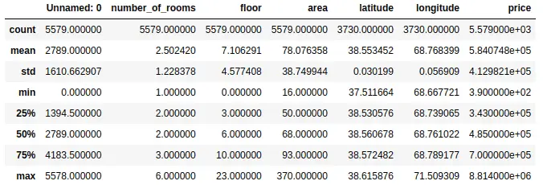
As shown above, the describe() method has provided the descriptive analysis of each column. But remember that we cannot trust these findings as the data is not yet clean. The values can change after cleaning data.
The info() method gives us some extra information about the dataset which includes the total number of rows and the data type of each column.
# info method
data.info()
Output:
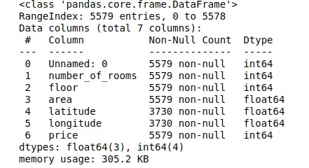
Notice that there are a total of 5579 observations and 7 columns in our dataset.
Dropping column from data frame in Pandas
As we have observed, our dataset has one unnecessary column named ‘Unnamed:0’. Let us remove this column from the dataset.
There are various methods available in Pandas that can help us to remove a column from the data frame. One of the popular methods is the drop() method. It can be used to drop both rows and columns, so we need to specify the axis. By default, the axis is 0 which means it will drop the row, but if we specify the axis as 1, then it will drop the specified column as shown below:
# copying the dataset
data1 = data.copy()
# droping the first column
data1.drop('Unnamed: 0', axis=1, inplace=True)
# heading
data1.head()
Output:
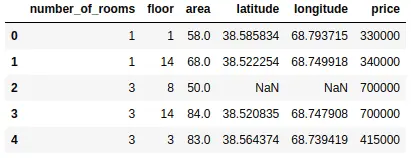
First, we copied the dataset so that we can use the original one later. Then we used the drop() method to drop the specified column. If we specify the value of inplace as False, then the column will not be removed permanently.
Another method to remove the column from the data frame is to use the del keyword. We have to specify the name of a column after del as shown below:
# copying the dataset
data2 = data.copy()
# deleting the column
del data2['Unnamed: 0']
# heading
data2.head()
Output:
We can also use the pop() method in pandas to drop the specified column.
# droping column
data.pop('Unnamed: 0')
# data heading
data.head()
Output:
As you can see, we have dropped the first column from the dataset.
Dropping rows from the data frame in pandas
Let us assume that there are some errors or unrelated observations in the dataset and we want to drop them. Again, various methods are available to drop the rows from the data frame.
As we discussed earlier, the drop() method can be used to drop both columns and rows. Let us now use this method to drop the first row from the dataset.
# dropping rows from the dataset
data.drop(0).head()
Output:
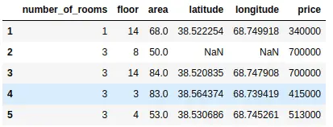
As you can see, the first row has been deleted from the dataset, but it has not been deleted permanently, because by default the value of inplace is False.
We can also drop the range of rows using the indexing number. For example, we will drop everything after index 2.
# dropping ramge of rows
df =data.drop(data.index[2:])
# df heading
df.head()
Output:
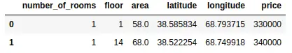
As you can see, we have only two rows left, because we have removed all others using the drop method.
Let us say that we want to remove the rows based on some conditions. We can do that by specifying the condition for the rows we want to keep as shown below:
# dropping rows based on condition
df1 = data.loc[data["price"] >=5000000 ]
# head
df1.head()
Output:
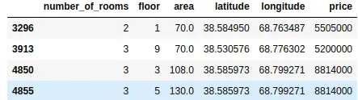
As shown above, now we have a dataset where the price is above then the specified range.
Renaming column names in Pandas
Sometimes, we may have a dataset where the names of the columns are not clear or not in the desired language. In such cases, we can use Pandas to change the name of the columns in our data frame.
One of the simplest ways to change the name of the columns is to use the rename() method. This method is useful when we need to rename some selected columns, rather than resetting all the column names.
Let us change the name of ‘number_of_rooms’ to ‘Room Count’ using the rename() method.
# renaming the column name in pandas
data.rename(columns ={'number_of_rooms':'Room Count'}, inplace =True)
# data heading
data.head()
Output:
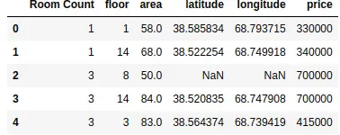
As you can see, we changed the name of the column. In a similar way, you can change the names of multiple columns by adding more items to the dictionary.
You can also change the column names by assigning a list of new names to the columns. One of the disadvantages of this method is that we have to provide the names of all columns even if we have to change only one column name.
Because we’re changing all the names, the length of the list which contains the new names of the columns should be equal to the total number of columns in the dataset.
# changing the names of the columns
data.columns = ['Room Count', 'Floor', 'Total Area', 'latitude', 'longitude', 'price']
# heading of the columns
data.head()
Output:
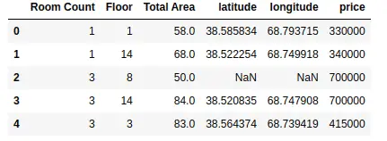
As shown above, we have assigned new names to some of the columns.
Another way to change the name of columns in Pandas is to use the set_axis() method. Here we have to pass the new names of columns and axis that should be replaced with a new name in the column as a parameter.
# changing the names of columns
data.set_axis(['Room Count', 'Floor', 'Total Area', 'Lat', 'Lon', 'Price'], axis='columns', inplace=True)
# data heading
data.head()
Output:
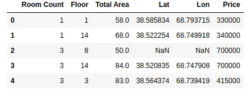
Notice that the new names have been assigned to the columns.
Handling NULL values in Pandas
Null values or missing values occur when there is no information. Pandas provide various useful methods to check and handle null values in our dataset.
For example, isnull() is used to check if there are null values in our dataset or not. Let us use this method to find how many values are null in each column.
# checking for null values
data.isnull().sum()
Output:
Room Count 0 Floor 0 Total Area 0 Lat 1849 Lon 1849 Price 0 dtype: int64
As shown above, there are null values in the latitude and longitude. We can also check for null values using notnull() method. This will count all the values which are not null.
# checking for null values
data.notnull().sum()
Output:
Room Count 5579 Floor 5579 Total Area 5579 Lat 3730 Lon 3730 Price 5579 dtype: int64
Again, we get fewer values for latitude and longitude because those columns have null values.
Once we know that there are missing values in our dataset, the next step is to learn how we can handle those values. Again, there are various methods available in panadas to deal with null values.
For example, the fillna() method is used to fill the null values with any other given value. Let us first create a copy of the dataset. We will use fillna() to fill the null values with zero values.
# copying the dataset
dataset = data.copy()
# filling the null values
dataset.fillna(0, inplace=True)
# dataset checking null values
dataset.isnull().sum()
Output:
Room Count 0 Floor 0 Total Area 0 Lat 0 Lon 0 Price 0 dtype: int64
As you can see now there are no null values in the dataset as we have filled the null values with zeros. You can fill them with other values, depending on the dataset. You can try to fill the null values in the dataset by filling them with the mean or median of the values.
Another way to fill null values with other values is to use replace() method as shown below:
# importing nupmy
import numpy as np
# copying the original dataset
dataset = data.copy()
# replacing the null values
data.replace(to_replace =np.nan, value = 0, inplace=True)
# data null checking
data.isnull().sum()
Output:
Room Count 0 Floor 0 Total Area 0 Lat 0 Lon 0 Price 0 dtype: int64
Again, you can see that there are no more null values because we have replaced the null values with zeros. Another exercise for you is to replace the null values with the previous values in the columns.
Sometimes, we don’t want to replace the null values with any dataset. For example, in our case, we cannot replace latitude and longitude with other values. In such cases, it is better to remove the null values from the dataset. In Pandas, we use the dropna() method to drop the null values from the dataset. By default, the dropna() method will remove the whole row which has a null value in it.
# dropping null values
data.dropna(inplace =True)
# data null value count
data.isnull().sum()
Output:
Room Count 0 Floor 0 Total Area 0 Lat 0 Lon 0 Price 0 dtype: int64
As you can see, now there are no null values in our dataset because we have removed all the observations with null values.
Changing the indexing of the data frame
Pandas Index is an immutable sequence used for indexing DataFrame and Series. Sometimes, our dataset may not have proper indexing, or we may want to use the columns as the indexing for the data frame. We can do that by using various methods available in Pandas.
We can set one of the columns as the index of the data frame using the set_index() method. For example, just for demonstration purposes, let us set the latitude column as the indexing column of the data frame.
dataset copying
dataset= data.copy()
# setting the index column
dataset = dataset.set_index('Lat')
# data heading
dataset.head()
Output:
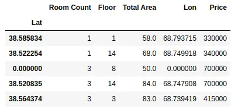
As you can see, we have set the latitude column as the indexing column of the data frame. We can also set multiple columns as indexing columns as shown below;
# dataset copying
dataset= data.copy()
# setting the index column
dataset = dataset.set_index(['Lat', 'Lon'])
# data heading
dataset.head()
Output:
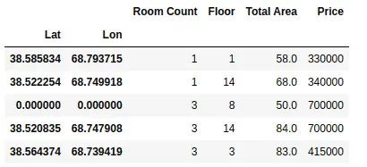
As shown above, we have set multiple indexing using two columns.
We can also set the columns by providing a list of values. For example, now we will set the index column using a range of values.
# dataset copying
dataset= data.copy()
# indexing values
index = pd.Index(range(len(data)))
# setting the index column
dataset = dataset.set_index(index)
# data heading
dataset.head()
Output:
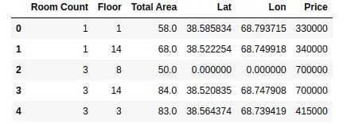
Notice that this time we have set the index column using a range of values.
Finding duplicate elements in the data frame
Sometime we may have duplicate observations. In Pandas, we can find duplicate observations by using duplicated() method.
# duplicates in data frame
duplicate = data[data.duplicated()]
# heading of duplicates
print(len(duplicate))
Output:
109
As you can see, we have 109 observations that are duplicated. The duplicated elements that we get above are based on the whole dataset. However, we can get duplicate elements based on specific columns as well.
# duplicated elements based on price
duplicate = data[data.duplicated('Price')]
# print
print(len(duplicate))
Output:
3732
As shown above, there are a lot of houses with the same prices. You can also find the duplicate elements based on more than one column by providing a list of columns as shown below:
# duplicated elements based on price
duplicate = data[data.duplicated(['Total Area', 'Price'])]
# print
print(len(duplicate))
Output:
1139
As shown above, we have 1139 duplicate elements based on two columns.
Here is an exercise for you. So far we have learned how to drop the rows and how to find the duplicate elements from the data frame. You can use these functions (drop() and duplicated()) to drop the duplicate observations from the dataset.
Cleaning strings in Pandas data frame
Sometimes the dataset contains information in a very unusual way and contains many letters or symbols which does not make any sense. For demonstration purposes, we will create a data frame using Pandas and apply various methods to clean the strings.
#creating a dataframe
data = pd.DataFrame(
{
"Date": ["10-03-2022", "11-03-2022", "11-04-2022", "11-05-2022"],
'Name': ['aZia', 'baHIr', 'AlAm', 'ERlan'],
'Status': [' Married', ' Single', 'Sing le', 'Married'],
'working': ['Yes()', 'No-', 'Yes!', 'Yes']
}
)
# data heading
data.head()
Output:
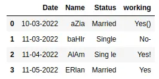
As you can see that there are white spaces, unnecessary symbols, and capitalization. We can check the data type of each column by using the info() method.
# info() method
data.info()
Output:
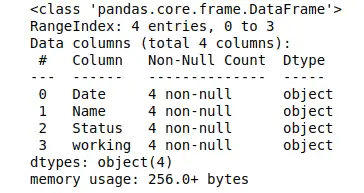
As you can see that all the columns are object types (strings). Now let us apply various methods to clean the data.
Removing unnecessary capitalization
As you can see, there is some unnecessary capitalization in the Name column. We can remove this capitalization either by creating our own function or by using apply() method.
Let us first create a user-defined function that will remove these unnecessary capitalizations.
# copy the dataset
dataset = data.copy()
# user defined
def capitalization(df):
# iterate over all the rows
for i in range(df.shape[0]):
#using strip function with
df.iat[i, 1]= df.iat[i, 1].strip().capitalize()
#head of the function
capitalization(dataset)
# printing dataset
dataset
Output:
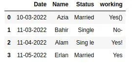
Notice that now there is no more unnecessary capitalization in our dataset.
A more concise method to remove capitalization is using the apply() method. This method allows us to apply a function along one of the axes of the DataFrame. Let us use this method to remove unnecessary capitalization.
# the apply method - data cleaning in pandas
data['Name'] = data['Name'].apply(lambda x : x.strip().capitalize())
# heading of data
data.head()
Output:
As shown above, there is no more unnecessary capitalization.
Remove Whitespace in a DataFrame
As you can see that there is some unnecessary whitespace in the Status column. Pandas provide various methods to remove whitespace from the DataFrame.
The strip() method in pandas removes the whitespace from the string. Using the strip() function We can easily remove extra whitespace from leading and trailing whitespace from starting. If your data has whitespaces at the start or at the end, you can use this method. The basic syntax of using this function is shown below where we have applied the strip() method on the Status column.
# the apply method - data cleaning in pandas
data['Name'] = data['Name'].apply(lambda x : x.strip().capitalize())
However, in our case, the whitespace is in between the letters. So, we will use replace() method. This method allows us to replace whitespace or any other letter with anything.
# replacing white spaces
data['Status']= data['Status'].str.replace(' ', '')
# data heading
data.head()
Output:
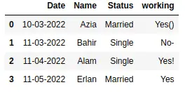
Once we’ve done this, the dataset no longer has any unnecessary whitespace.
Removing characters from the columns
Removing special characters from the columns is similar to removing whitespace. We can use the replace() method to remove special characters from the column. For example, the ‘working’ column in our dataset contains some special characters. First, let us use the replace() method to remove some of the characters.
# dataset removing symbols
data['working'] = data['working'].replace({'-':'', '!': ''}, regex=True)
# dataset
data
Output:
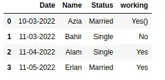
As you can see, we have used replace method to replace multiple characters. We can also use the replace method along with the apply method. Here we show this using a lambda function to replace special characters to remove the parentheses from the working column.
# removing brackets
data['working'] = data['working'].apply(lambda x: x.replace('(','').replace(')',''))
# data heading
data
Output:
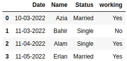
As you can see, now our data is clean.
As an exercise, you can try to remove the sub-strings from the columns using the replace method.
Summary
In this article, we learned about data cleaning in Pandas using various methods. We covered how to handle null values, drop columns, find duplicate values, and set indexing. Moreover, we also learned how we can replace and remove special characters from the dataset using various examples.